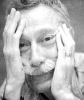

(1930 – 1995)

Yazarların çoğu olabildiğince fazla kişiye ulaşmak, yazdıklarını herkesle paylaşmak çabasındadır. Bazı yazarlarsa adeta okur seçerler; kendilerini herkesin okumasından, anlamasından, sevmesinden gizli bir rahatsızlık duyar gibidirler. Türk edebiyatının en kendine özgü yazarlarından biri olan Bilge Karasu az yazdığı ama gerçekten "öz" yazdığı kitaplarıyla bu tür "seçkin" yazarlardan biri olmayı başarmıştır.
Ülkemiz yazarlarının en kendine özgü ve en kişisel olanlarından biri olan öykücü, romancı ve deneme yazarı Bilge Karasu 1930'da, İstanbul'da dünyaya geldi. İstanbul Üniversitesi Edebiyat Fakültesi Felsefe Bölümü'nde öğrenim gördü. Ankara Radyosu Dış Yayınlar Servisi'nde çalıştı. 1963 yılında, Rockefeller bursuyla gittiği Avrupa'dan dönerek çevirmenliğe başladı. Ölümüne kadar Hacettepe Üniversitesi'nde araştırma görevlisi olarak çalıştı.
Bilge Karasu bireyin sorunlarına ağırlık veren, onun günlük hayatındaki açmazlarını işleyen bir yazardır. Her insanın hayatında önemli bir yer edinen (sevgi, dostluk, yalnızlık, tutku, inanç/inançsızlık, korku ve ölüm gibi) kavramları imgesel bir dille anlatır. Yazar günlük hayattan bahsettiği için okuyucu, hikayedeki kahramanda ya da diğer kişilerde kendinden parçalar bulur. Böylece kullanılan imgeleri de rahatlıkla bilinçaltında kendi yaşamına göre şekillendirip yorumlar, dolayısıyla hikayeyle okur arasında bir bağ oluşur. Çünkü Karasu insanla insanüstüyü, olağanla olağanüstüyü yapaylığa düşmeden, metnin doğal akışı ve hayatın kurgusal akışı içinde verir. Okurun hayal gücünü özgür bırakır. Karasu, kelimelerini özenle seçer. Dili işlenmiş, üzerinde çok çalışılmış, oynanmış bir dildir. Kullandığı arı Türkçe başka yazarlarda yapay ve zorlama dururken onun metinlerinde hoş bir tat bırakır. Çünkü ritim düşünülerek, ses düşünülerek, görsellik düşünülerek kurulmuş, kurgulanmış, kusursuz olması istenmiş bir dille yazılmıştır.
Türk edebiyatının en özgün kalemlerinden biri olan Karasu, Gece adlı kitabıyla on yılda bir verilen Pegasus Ödülü'nü kazanan tek Türk yazardır. Aynı zamanda felsefeyle de ilgilenen Karasu, metinlerinde felsefi sorunları işlemiş ya da onun metinleri felsefi incelemenin konusu olmuştur. Postmodern romanın Türkiye'deki önemli isimleri arasında değerlendirilmektedir.
İlk öykülerini Seçilmiş Hikayeler dergisinde 1950'de yayımlayan Karasu, öykülerinden derlediği ilk kitabını da 1963'te yayımladı. Aynı yıl Lawrence'tan çevirdiği Ölen Adam'la TDK Çeviri Ödülü'nü kazandı. 14 Temmuz 1995'te pankreas kanseri tedavisi sürerken Hacettepe Üniversitesi'nde yaşama veda etti. Vasiyeti üzerine, bütün yapıtlarını yayımlayan Metis Yayınları tarafından kitaplarının gelirinden elde edilen parayla onun adına bir edebiyat bursu verilmektedir.
Romanları: Gece (1985), Kılavuz (1990)
Ödülleri:
1963 Türk Dil Kurumu Çeviri Ödülü (D. H. Lawrence'tan çevirdiği Ölen Adam'la)
1970 Sait Faik Hikaye Armağanı (Uzun Sürmüş Bir Günün Akşamı ile)
1991 Pegasus Ödülü (Gece ile)
1994 Sedat Simavi Edebiyat Ödülü (Ne Kitapsız Ne Kedisiz ile)